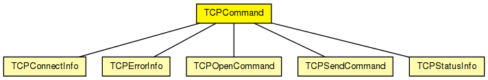

Control info for TCP connections. This class is to be set as control info (see cMessage::setControlInfo()) on all messages exchanged between TCP and application, in both directions. Some commands and indications (TCP_C_OPEN_xxx, TCP_I_STATUS) use subclasses.
connId identifies the connection locally within the application (internally, TCP uses the (app gate index, connId) pair to identify the socket). connId is to be chosen by the application in the open command.
See also: TcpCommandCode, TcpStatusInd, TCPOpenCommand, TCPStatusInfo, TCP
The following diagram shows usage relationships between types. Unresolved types are missing from the diagram.

The following diagram shows inheritance relationships for this type. Unresolved types are missing from the diagram.
| Name | Type | Description |
|---|---|---|
| TCPConnectInfo | class |
Sent with message kind TCP_I_ESTABLISHED, to let the app know about the local and remote IP address and port. |
| TCPErrorInfo | class |
Currently not in use. |
| TCPOpenCommand | class |
Control info to be used for active or passive TCP open. |
| TCPSendCommand | class |
Control info to be used with the SEND command. |
| TCPStatusInfo | class |
Sent with message kind TCP_I_STATUS, in response to command TCP_C_STATUS. For explanation of variables, see RFC 793 or TCPStateVariables in TCPConnection.h. |
| Name | Type | Description |
|---|---|---|
| connId | int |
identifies the socket within the application |
| userId | int |
id than can be freely used by the app |
// // Control info for \TCP connections. This class is to be set as control info // (see cMessage::setControlInfo()) on all messages exchanged between TCP and // application, in both directions. Some commands and indications // (TCP_C_OPEN_xxx, TCP_I_STATUS) use subclasses. // // connId identifies the connection locally within the application (internally, // TCP uses the (app gate index, connId) pair to identify the socket). // connId is to be chosen by the application in the open command. // //# TODO explain userId // // @see TcpCommandCode, TcpStatusInd, TCPOpenCommand, TCPStatusInfo, TCP // class TCPCommand { int connId = -1; // identifies the socket within the application int userId = -1; // id than can be freely used by the app }